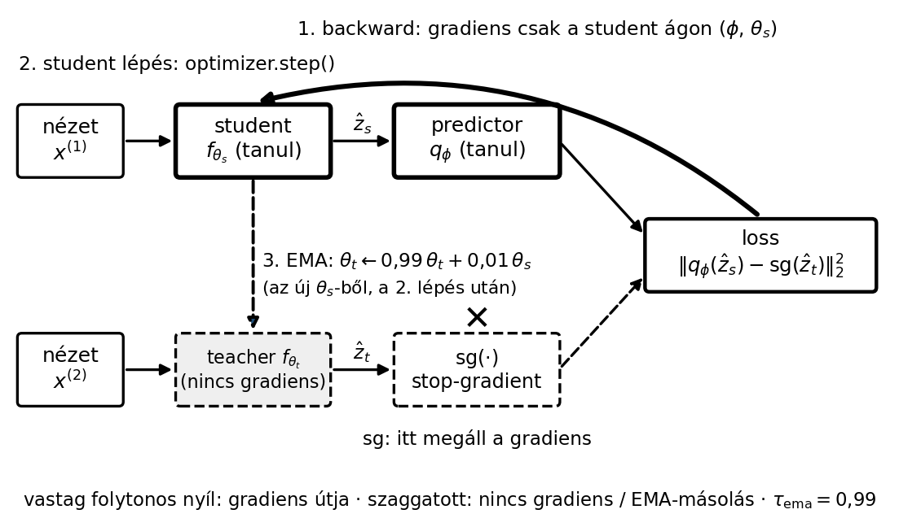
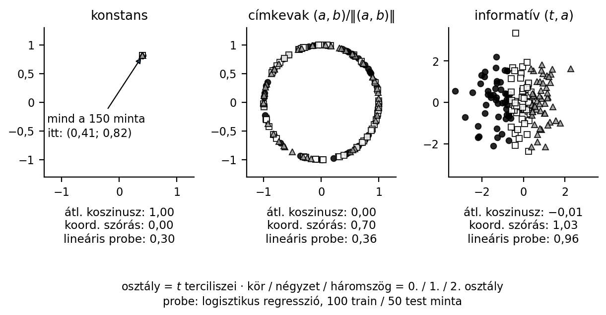

A 30.2. Kontrasztív cél és temperature egységben az InfoNCE/NT-Xent célfüggvényt vizsgáltuk: a pozitív pár hasonlóságát a negatív párokból képzett nevezővel versenyezteti. Ebben az alfejezetben azt a kérdést járjuk körül, mi történik, ha a negatív példákat teljesen elhagyjuk, és csak arra kérjük a modellt, hogy ugyanannak a jelenetnek két nézete azonos reprezentációba kerüljön. Előismeret: a 30.2. Kontrasztív cél és temperature alfejezetből a hasonlósági mátrix, a temperature és a maszk, a 29.3. Regularizált latent reprezentáció alfejezetből a latent representáció összeomlásának (collapse) fogalma, a 18.3. Pre-activation, kis batch és alternatív normalizálás alfejezetből a futó átlagok könyvtári kezelése. Induló becslés: ha a loss csak annyit mond, hogy „a két nézet kimenete egyezzen”, akkor a konstans encoder triviálisan teljesíti-e a feladatot? Ha igen, mi akadályozza meg a tanuló algoritmust abban, hogy ezt a degenerált megoldást válassza?
A negatív nélküli (noncontrastive) módszercsalád közös váza a következő. Legyen az encoder, egy kép két nézete, és a normalizált reprezentáció, feltéve, hogy a norma pozitív. A legegyszerűbb pozitív-páros cél a normalizált átlagos négyzetes hiba:
Ez a cél a teacher–student keretben bővül. Két súlyhalmazt tartunk nyilván: a student (online) hálózatot és a teacher (target) hálózatot. A veszteség
ahol egy kis predictor fej, pedig a stop-gradient operátor. Ebben az alakban a kimenetét nem normalizáljuk, a cél viszont egységnormájú; ez eltér a BYOL/SimSiam eredeti alakjától, ahol a predictor kimenetét is -normalizálják, és a veszteség (), tehát 0 és 4 közé eső, skálafüggetlen mennyiség. A normalizálatlan változatban a predictor kimenetének normája is a veszteség része; a gyakorlatban a normalizált alakot érdemes használni. A fenti veszteség egyirányú: a student első nézetét a teacher második nézetéhez hasonlítja; a szimmetrikus változatban a két nézet szerepét felcserélve is kiszámítjuk és a két tagot átlagoljuk.
Definíció (stop-gradient). A
operátor az argumentum értékét változatlanul hagyja az előremenő
számításban, de a visszafelé számításban az argumentum felé eső
Jacobi-mátrix blokkját nullával helyettesíti. Ha a loss skalár és a
teacher kimenete
,
akkor a gyakorlati frissítésben
nem számolódik, miközben a
értéke a lossba behelyettesített, aktuális teacher-kimenet marad. A
PyTorch-beli megfelelője veszteséggráfban a tensor.detach()
(a tenzort leválasztja a gráfról), illetve a
with torch.no_grad(): blokk (a blokkon belül egyáltalán nem
épül gráf); a kettő nem azonos hatókörű: a detach() egy
konkrét tenzort szakít le, a no_grad egy kódrészlet összes
műveletére hat.
A teacher súlyait exponenciális mozgóátlaggal (moving average) frissítjük:
A rendszerint közel 1 (például 0,99). Ez a forma emlékeztet a BatchNorm futó átlagára, de ott statisztikákat, itt paramétervektorokat átlagolunk; a frissített mennyiség (statisztika, illetve paraméter) és annak kezelése tehát különbözik. A frissítés sorrendje lényeges: először a student veszteségén visszaterjesztünk és a student-optimizáló lép, utána a teacher a frissített student felé mozdul. A teacher kimenetén nincs gradiens, ezért a teacher nem tanul visszaterjesztéssel, csak a momentum frissítésen keresztül követi a studentet.

A célfüggvény önmagában nem bünteti a reprezentáció inputfüggésének elvesztését. Ezt rögzíti a következő lemma.
Lemma (konstans embedding mint degenerált optimum). Legyen tetszőleges inputhalmaz, encoder, és legyen
ahol , feltéve, hogy a nevező pozitív. Tegyük fel, hogy létezik , amelyre minden esetén. Ekkor
Bizonyítás. (1) Mivel minden inputra a vektort adja, , így minden összegtag nulla, az átlaguk is nulla. A normalizált MSE definíció szerint nemnegatív, tehát a a minimum.
A lemma két kontrollt nevez meg. Az első a reprezentációs collapse-mérő: egy batchben a vektorok páronkénti koszinusz-hasonlóságának átlaga, illetve a koordinátánkénti szórás. Konstans embeddingnél a páronkénti koszinusz mátrix minden eleme 1, a szórás minden koordinátán 0. A második az downstream kontroll: egy rögzített spliten tanított lineáris fej pontossága. A degenerált reprezentáció a pretext loss optimumában ülhet, miközben a downstream kontroll véletlen szintet mutat.
Az InfoNCE-val a különbség jól látható: ott a nevező negatívokat tartalmaz, és a konstans esetén a pozitív és negatív párok azonos hasonlóságot kapnak, ezért a loss nem nulla; ha minden hasonlóság azonos, az érték pontosan , ahol a negatívok száma. A negatív nélküli cél ezt a büntetést elhagyja, ezért a collapse-ot a tréningmechanizmusnak kell megakadályoznia.
A stop-gradient és a momentum teacher szerepe nem állítható be bizonyított mechanizmusként ezen a szinten. A BYOL (Grill és mtsai, 2020) és a SimSiam (Chen és He, 2021) munkáiban leírt megfigyelés az, hogy a student és a lassan változó teacher közötti aszimmetria, valamint a predictor fej jelenléte eltérő fixpontokat hozhat létre, így a konstans megoldás nem stabil vonzó pontja a teljes dinamikának. Ez azonban heurisztikus magyarázat; a BatchNorm, az optimalizáló és a súlycsökkenés szerepe a negatív nélküli tanulásban jelenleg is aktív kutatási kérdés, nem e könyv lezárt tételanyaga.
Legyen , , és válasszuk a konstans reprezentációt. Az inputok
ahol
az
-gyel
azonos alakú, független standard normális minta. Az
a kód rögzített seedű rng.normal hívásának eredménye.
A konstans encoder mindkettőre a sort adja. A normalizálás: ; a normalizált sor minden esetben . A veszteség minden sorra , a páronkénti koszinusz átlaga .
import numpy as np
rng = np.random.default_rng(20261020)
N, d = 6, 4
X1 = rng.normal(size=(N, d)).astype(np.float64)
X2 = X1 + 0.1 * rng.normal(size=(N, d)) # zajos view
v = np.array([1.0, 2.0, 1.0, 0.0], dtype=np.float64)
def f_const(x):
return np.tile(v, (x.shape[0], 1)) # (N, d)
Z1 = f_const(X1); Z2 = f_const(X2)
nrm = np.linalg.norm(v)
Z1h = Z1 / nrm; Z2h = Z2 / nrm # stabilizált alak
L = np.mean(np.sum((Z1h - Z2h) ** 2, axis=1))
coord_std = Z1h.std(axis=0) # (d,)
C = Z1h @ Z1h.T # (N, N) koszinuszmátrix
mean_pair_cos = (C.sum() - np.trace(C)) / (N * (N - 1))
y = np.array([0, 1, 2, 0, 1, 2], dtype=np.int64)
lemma_bound_demo = float(np.mean(np.zeros(N, dtype=np.int64) == y))
# a lemma (2) felső korlátjának szemléltetése, nem tanított fej
print(f"L={L:.12f}")
print(f"coord_std={coord_std}")
print(f"mean_pair_cos={mean_pair_cos:.12f}")
print(f"lemma_bound_demo={lemma_bound_demo:.6f}")
assert L == 0.0 and np.all(coord_std == 0.0)
assert abs(mean_pair_cos - 1.0) < 1e-12
assert abs(lemma_bound_demo - 1.0 / 3.0) < 1e-12A kód lefutott (Python 3.12.3, NumPy 2.5.4, CPU, float64, seed 20261020); mért kimenet:
L=0.000000000000
coord_std=[0. 0. 0. 0.]
mean_pair_cos=1.000000000000
lemma_bound_demo=0.333333A szimulált kontroll a lemma (2) pontjának felső korlátját szemlélteti: a konstans predikció a kiegyenlített osztály mellett éppen pontosságot ad; ez nem tanított downstream fej mérése.
Előfeltételek. Python 3.12, CPU; a lab/
munkakönyvtárban uv sync-kel telepített környezet (a
uv.lock szerint NumPy 2.3.5 és pandas 2.3.3; a közölt mért
kimenetek a könyv ellenőrző környezetéből, Python 3.12.3 és NumPy 2.5.4
alatt készültek); a laborban használt GlyphLab-fájlok a
data/ alatt (images.npy,
masks.npy, metadata.csv közül a szükségesek);
a futásidőt a futtatás során mért értékként kell rögzíteni.
A jelen alfejezet nem futtat kísérletet; az alábbi protokoll egy végrehajtható terv, a mért eredmény hiányát explicit jelöljük.
Hivatkozott kiindulópont. A [P17] SimCLR absztraktja alapján a kontrasztív keret a két nézet közötti egyezést a batchbeli negatívokkal versenyezteti. A labor kérdése: ugyanazon GlyphLab encoder (a függelék A. A GlyphLab adatkészlet szakasza szerinti adaton), view-set és tanítási költségvetés mellett hogyan viselkedik a negatív nélküli cél a stop-gradient és a momentum teacher változatokban?
Adat és split. A GlyphLab
data/images.npy (360,1,24,24) float32 tömbje;
a train/val/test a metadata-ban rögzített jelenetek. A pretext során a
downstream címkét nem használjuk, csak a képeket; a view-párok: az
eredeti kép és annak független additív Gauss-zajjal
()
perturbált,
intervallumra vágott változata, véletlen fényességskálázással
(–
szorzó) és legfeljebb 2 pixeles véletlen eltolással, tükrözéses
kitöltéssel (reflection padding), a 30.1. Pretext és
downstream feladat nézetképzésével egyezően. A 90°-os forgatást
kizárjuk, mert a háromosztályos orientation-célhoz nem címkemegőrző
transzformáció; a pretextben való alkalmazása downstream értelmezési
zavart vinne be.
Modell. Kis CPU-s CNN encoder a 30.1. Pretext és downstream feladat backbone-jével
azonos felépítésben, de
kimenettel: Conv2d(1, 8, 3, padding=1) + ReLU + Conv2d(8, 16, 3,
stride=2, padding=1) + ReLU + AdaptiveAvgPool2d(4) + Linear(256, 32);
float32 CPU. A három futás seedje 20261020, 20261021, 20261022. A
downstream fej egyetlen Linear(32,3).
Változó tényezők. (a) kontrasztív InfoNCE baseline, ; (b) negatív nélküli cél stop-gradient nélkül; (c) ugyanaz stop-gradienttel; (d) stop-gradient és momentum teacher, ; (e) a (d) változat predictor nélkül. Minden változathoz három seed (20261020, 20261021, 20261022) ugyanazon a train/val/test felosztáson, és a változatokat ugyanazon seedekkel párosítjuk. A downstream összehasonlítás döntési szabálya a jelenet szintű páros különbség bootstrap CI-je a 23.3. Páros összehasonlítás és csoportszintű intervallum szerint: 0-t kizáró 95%-os CI esetén állítunk különbséget, egyébként nem; a két külön intervallum átfedése nem helyettesíti ezt.
Metrikák. Pretext veszteség train/val; collapse-mérő
a val reprezentációk páronkénti átlagos koszinusza; downstream lineáris
fej pontossága a rögzített testen. A lineáris fejet a rögzített train
reprezentációkra tanítjuk azonos epoch-kerettel, a val a lineáris fej
L2-regularizációs erősségének kiválasztására szolgál
(),
a test a végső méréshez. A downstream méréshez használjuk a tiszta, nem
korrupt tesztet; a corrupted_test.npy-t itt nem használjuk,
mert az a 38.3. Végső teszt és páros korrupció
projekt II zárótesztjéhez van fenntartva.
Átadandó eredmény formája. Protokollfájl, pretext loss-görbe, collapse-mérő és downstream pontosság minden változatra seed-átlaggal. A terv nem futott le, ezért számszerű kimenetet nem állítunk; a (b) változat a konstans optimum felé csúszhat, de ezt mérés nélkül nem tekintjük eredménynek.
F1 (fogalmi, nehézség 1). Definiálja az alábbi három fogalmat az ebben az alfejezetben bevezetett jelölésekkel: teacher, student, stop-gradient. Adja meg, melyik paraméterekre számolunk gradienst a tanulási lépésben, és mi a szerepe a predictor fejnek.
F2 (levezetési, nehézség 2). Tekintse a normalizálatlan változatot: , ahol , és nincs normalizálás. Bizonyítsa be, hogy az azonosan nulla encoder minden -re az globális minimumát adja, és adja meg a downstream pontosság felső korlátját ebben az esetben is. Miért szükséges a lemmában a feltétel, és mit ad a változat nullvektorra?
F3 (implementációs, nehézség 2). Írjon teljes NumPy
függvényt no_negative_loss(Z1, Z2) néven, amely a
normalizált MSE-veszteséget és a collapse-mérőt (páronkénti átlagos
koszinusz) adja vissza. Az inputok (N,d) float64 tömbök, és
a függvény stabilan kezelje azt az esetet, ha egy reprezentációsor
normája nullához közeli (használj
normalizálási epsilont). Ellenőrizze a konstans
példán, és egy olyan batchen, ahol a két nézet egymástól eltér.
F4 (hibakeresési, nehézség 3). A következő vázlat a momentum teacher frissítését akarja elvégezni PyTorchban:
for tp, sp in zip(teacher.parameters(), student.parameters()):
tp.data = tau * tp.data + (1.0 - tau) * sp.data
# ... később a loss.backward() és student_optimizer.step()Azonosítsa a két lehetséges hibát, és magyarázza el a következményét:
mi történik a tanulási dinamikával, ha a frissítés (i)
no_grad és requires_grad_(False) nélkül fut:
marad-e gradiens vagy gráf a teacher paramétereken, ha a loss-ban a
teacher kimenetét nem detach()-eljük; (ii) a student
step() előtt hajtódik végre? Adja meg a javított kódot
no_grad és megfelelő sorrend használatával.
F5 (kísérlettervezési/transzfer, nehézség 3). Tervezzen kísérletet a GlyphLabon, amely azt vizsgálja, hogy a negatív nélküli pretext reprezentáció jobb-e a downstream orientation osztályozáshoz, mint (i) a véletlenül inicializált encoder és (ii) az autoencoderes rekonstrukciós pretext. Adja meg a megfigyelési egységet, a splitet, a baseline-okat, a változó tényezőket, a metrikákat és az érvényességi korlátot. Nem kell futást végezni, de a tervnek végrehajthatónak kell lennie a könyv CPU-s főútján.
A protokoll rögzítse a hipotézist, a változó tényezőt, a kontrollt, a metrika mértékegységét, a seedeket, az erőforrásigényt és a számokkal megadott döntési szabályt; ha a terv tanítást is tartalmaz, az architektúrát, az optimizert, a tanulási rátát és az epochszámot is.
F1. A student a paraméterű encoder, amelyre a pretext veszteség gradiensét visszaterjesztjük; a teacher a paraméterű, ugyanolyan architektúrájú encoder, amelyen keresztül gradiens nem áramlik, súlyát az exponenciális mozgóátlag frissíti. A stop-gradient a teacher kimenetét a loss számításában konstansként kezeli, tehát a visszaterjesztés során a teacher felé eső gradiens blokkot nullázza. A gradiens kizárólag a student és a predictor paramétereire számolódik; a predictor a student oldali kis MLP, például ReLU-val, amely az aszimmetriát növeli, és a módszercsalád gyakorlatában a negatív nélküli tanulás stabilitásához járul hozzá. A tanulási lépésben tehát és frissül, a teacher nem.
F2. Ha minden -re, akkor minden tag , ezért . Mivel a norma négyzete nemnegatív, ez a globális minimum. A downstream predikció konstans, így a pontosság legfeljebb , kiegyenlített esetben . A normalizált változat lemmájában a feltétel szükséges, mert a esetben a nincs értelmezve. A numerikus -normalizálás alakban nullvektorra nullvektort ad, tehát a veszteség ekkor is nulla; kis, de nem nulla normánál viszont a hányados nem egységvektor, csak legfeljebb normájú, ezért a numerikus alak nem azonos a matematikai normalizálással, és a kis normájú soroknál a két nézet eltérését alábecsüli. A konstans encoder downstream korlátja viszont a lemma (2) pontja szerint , függetlenül az választásától.
F3. Teljes kód:
import numpy as np
def no_negative_loss(Z1, Z2, eps=1e-12):
"""
Z1, Z2: (N, d) float64 reprezentációsorok.
Visszatérés: normalized_mse (a két normalizált nézet átlagos négyzetes
távolsága), mean_pair_cos (a Z1h-n belüli párok átlagos koszinusza).
"""
n1 = np.linalg.norm(Z1, axis=1, keepdims=True)
n2 = np.linalg.norm(Z2, axis=1, keepdims=True)
Z1h = Z1 / np.maximum(n1, eps)
Z2h = Z2 / np.maximum(n2, eps)
L = np.mean(np.sum((Z1h - Z2h) ** 2, axis=1))
C = Z1h @ Z1h.T
N = Z1h.shape[0]
mean_pair_cos = (C.sum() - np.trace(C)) / (N * (N - 1))
return L, mean_pair_cos
# Ellenőrzés konstans esetben
v = np.array([1.0, 2.0, 1.0, 0.0], dtype=np.float64)
Zc = np.tile(v, (6, 1))
Lc, mpc = no_negative_loss(Zc, Zc)
print(f"konstans: L={Lc:.12f}, mean_pair_cos={mpc:.12f}") # 0, 1
# Eltérő nézetek: várhatóan L>0 és mpc<1
rng = np.random.default_rng(20261020)
Za = rng.normal(size=(6, 4)); Zb = rng.normal(size=(6, 4))
Ld, mpd = no_negative_loss(Za, Zb)
print(f"eltérő: L={Ld:.6f}, mean_pair_cos={mpd:.6f}")
assert Lc == 0.0 and abs(mpc - 1.0) < 1e-12
assert Ld > 0.0 and -1.0 <= mpd <= 1.0A kód lefutott (Python 3.12.3, NumPy 2.5.4, CPU, float64, seed 20261020); mért kimenet:
konstans: L=0.000000000000, mean_pair_cos=1.000000000000
eltérő: L=2.015337, mean_pair_cos=0.009919A konstans esetben a veszteség pontosan nulla és a páronkénti koszinusz ; az eltérő véletlen nézeteknél a veszteség , a páronkénti koszinusz , ami közel áll a független véletlen vektorok várható nulla hasonlóságához. A tolerancia a konstans esetben a float64 kerekítés miatt alatt van.
F4. A kód két hibája:
A tp.data = ... frissítés kikerüli az autogradot
(nem épül gráf, és a verziószámláló sem frissül), de a teacher
paraméterein továbbra is requires_grad=True marad. A
.data önmagában nem ad garanciát a stop-gradientre: ha a
loss-ban a teacher kimenete nincs detach()-elve, a backward
a teacher paramétereire is számol gradienst, és az felhalmozódhat a
teacher paramétereinek grad mezőjében; ha pedig ezt egy
optimalizáló fel is használja, a teacher visszaterjesztéssel is tanul. A
biztonságos forma a with torch.no_grad(): blokk, szükség
esetén a teacher paraméterein requires_grad_(False)
beállítással.
Ha a teacher frissítése a student step() előtt
történik, akkor a teacher a régi student súlyok felé mozdul. A
szándék az, hogy a teacher a frissített studentet kövesse, ezért a
sorrend: loss.backward(),
student_optimizer.step(), majd a teacher momentum
frissítés.
Javított kód:
# backward és student update
loss.backward()
student_optimizer.step()
# teacher frissítés, gradiensgráf nélkül
with torch.no_grad():
for tp, sp in zip(teacher.parameters(), student.parameters()):
tp.mul_(tau).add_(sp, alpha=1.0 - tau)Visszaellenőrzés: a momentum frissítés torch.no_grad()
alatt történik, ezért nem épít gráfot; a teacher paraméterein a
requires_grad jelző változatlanul True marad,
de a veszteségben a teacher kimenete detach()-en
(stop-gradienten) keresztül szerepel, így a backward nem számol
teacher-gradienst. Az egységteszt: egyetlen lépésre
méretű lineáris réteggel,
,
,
esetén a frissítés után
a mozgóátlag képletéből.
F5. Egy lehetséges terv: a GlyphLab train/val/test
jelenetfelosztását változatlanul hagyjuk; a pretext tanuláshoz minden
train képből két view-t készítünk a 30.1. szakaszban megengedett
címkemegőrző augmentációkkal (kis eltolás, kis zaj, intenzitásskála), a
-os
forgatás és a tükrözés nélkül. A változó a pretext cél: (A) véletlen
encoder (nincs pretext), (B) autoencoder rekonstrukciós pretext, (C)
negatív nélküli pozitív-páros pretext stop-gradienttel, EMA teacherrel
()
és predictor fejjel; a predictor és az EMA beállítása ugyanaz, mint a
labor (d) változatában. A downstream fej mindhárom esetben egy
Linear(32,3) a rögzített encoder-kimeneten. A megfigyelési
egység a scene_id, ezért a val/test jeleneteket soha nem használjuk
pretext tanításra. A metrika a downstream val/test pontosság minden
változatra három seeddel. A baseline az (A) véletlen encoder, mert azt
méri, mennyit ér a pretraining nélküli, csak az inicializációból
származó reprezentáció. Az érvényességi korlát: a GlyphLab nem
természetes képi adat; a pretext transzformációk a generált vonalak
statisztikáira vannak hangolva; a scene-függő zaj miatt a jelenetek
közötti augmentációs invariance eltérhet a valós adatoktól, így az
eredmény nem általánosítható termelési modellre.
A leggyakoribb tévedés azt hinni, hogy a collapse elkerülése önmagában downstream feladatsikerrel jár. Ez nem igaz. Ellenpéldául tekintsünk olyan adatot, ahol , az , és egymástól független folytonos véletlen változók, a háromosztályos címkét pedig kizárólag alapján, azonos valószínűségű intervallumokkal képezzük. A két nézet ugyanazt az koordinátát tartalmazza, és csak a koordinátában tér el: az első nézet -jéhez , a másodikéhoz független kis zajt adunk. Legyen az encoder . Ez a két nézetet pontosan össze tudja párosítani, mert a reprezentáció a zajától nem függ, tehát a negatív nélküli pretext veszteség nulla lehet. A különböző bemenetek reprezentációi nem állandók, és normalizálás után sem mind ugyanabba az irányba mutatnak, ezért a páronkénti koszinusz-hasonlóság nem szükségképpen 1. A címkére azonban semmilyen információt nem tartalmaznak: kiegyensúlyozott osztályok mellett a belőlük dolgozó legjobb osztályozó várható pontossága legfeljebb . A nem összeomlott reprezentáció tehát nem feltétlenül hasznos a downstream feladathoz. Emiatt a pretext tanítást előre rögzített downstream kontrollal kell kiértékelni, nem csupán a collapse hiányával.

Önellenőrző kérdések: (1) A stop-gradient operátor mit tesz a veszteség Jacobi-mátrixában? (2) Miért nulla a konstans encoder vesztesége a normalizált MSE alatt, és mi a downstream pontosság felső korlátja kiegyenlített osztályoknál? (3) Miben különbözik a momentum teacher frissítés a BatchNorm futó statisztikájától? (4) Miért nem elég a páronkénti koszinusz átlaga 1-től való eltérése a downstream hasznosság igazolásához?
Válaszkulcs. (1) A stop-gradient a veszteség Jacobi-mátrixában az adott ág felé nullázza a gradienset. (2) A konstans encoder normalizált MSE vesztesége nulla, a downstream pontosság felső korlátja kiegyenlített osztályoknál . (3) A momentum teacher a paraméterek exponenciális átlagát frissíti, nem a BatchNorm futó statisztikáját. (4) A páronkénti koszinusz átlagától való eltérés nem garantál downstream hasznosságot: a reprezentáció lehet collapse-elt vagy a címkétől független.
Visszahívás: a 29.3. Regularizált latent reprezentáció autoencodernél a rekonstrukciós cél önmagában nem garantál a downstream címkére hasznos reprezentációt; az itt tárgyalt negatív nélküli pretext a pozitív invarianciából ugyanígy nem kap downstream garanciát. A downstream lineáris fej pontossága argmax-alapú osztályozást mér, nem külön kalibrált küszöböt; a kalibrációt és a működési pontot külön kell vizsgálni, hasonlóan a 26.3. NMS, confidence és AP pontosság–lefedettség elemzéséhez. A 18.3. Pre-activation, kis batch és alternatív normalizálás futó átlagos állapota párhuzamos a momentum teacher exponenciális átlagával, de a frissített mennyiség (statisztika, illetve paraméter) és a tengelyek eltérnek.
A negatív nélküli pretext cél csak pozitív párokat használ: ugyanannak a jelenetnek két nézete azonos normalizált reprezentációba kerüljön. A konstans encoder a normalizált MSE veszteséget nullára csökkenti, miközben a downstream pontosság csak lehet; ezt a lemmát a jelen alfejezet bizonyítja. A collapse ellen a gyakorlatban stop-gradient, momentum teacher és predictor fej szolgál, de ezek hatása heurisztikus, nem lezárt tétel. A laborban a SimCLR-keretből kiinduló mechanizmus- és ablatív tervet készítünk, a feladatokban pedig a kontrollt és a tipikus tévedéseket gyakoroljuk.
Az induló becslésre a válasz: igen, a konstans encoder a normalizált MSE-t nullára csökkenti, ezért a puszta pozitív-páros cél degenerált megoldást enged; a stop-gradient, a momentum teacher és a predictor fej azért kell, hogy ezt a triviális megoldást elkerülje, de downstream garanciát ezek sem adnak.
A következő 30.4. Önfelügyelt kísérlet korrekt összevetése egység az önfelügyelt kísérletek korrekt összevetését vizsgálja: ott az itt definiált negatív nélküli pretext, a collapse-mérő és a downstream kontroll kapcsolódik össze a véletlen, rekonstrukciós és kontrasztív baseline-ok fair összehasonlításában.
Források: